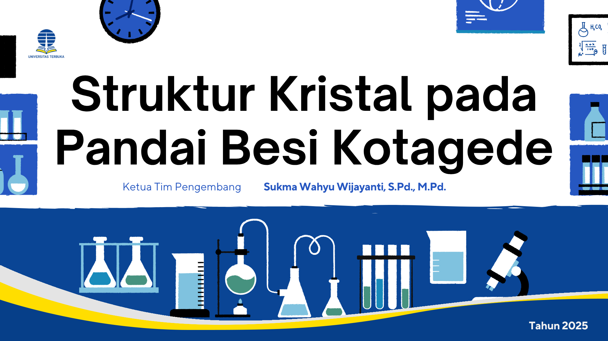

Selamat datang
RISPRO adalah simulasi manajemen risiko proyek sektor publik. Pengguna berperan sebagai Project Manager layanan publik digital dan membuat keputusan yang memengaruhi biaya, waktu, serta risiko proyek.
Tujuan belajar: melatih pemahaman kondisi kepastian, risiko, dan ketidakpastian; mengevaluasi vendor; serta merefleksikan pola pengambilan keputusan.
Daftar isi
- Beranda dan menu
- Pengantar simulasi dan profil vendor
- Pengambilan keputusan proyek
- Analisis profil risiko
- Materi dan kuis
- Refleksi pembelajaran
Yang perlu disiapkan
- Koneksi internet diperlukan untuk memuat data vendor dan analisis AI.
- Baca semua skenario serta konsekuensi pilihan sebelum melanjutkan.
- Gunakan materi sebagai bekal sebelum melakukan simulasi.
1. Beranda dan menu
Beranda menampilkan judul Risk Decision Simulator, konteks peran pengguna, tombol Mulai Simulasi, serta tiga menu belajar.
Mulai Simulasi
Memulai cerita proyek layanan publik digital dan rangkaian keputusan.
Materi
Membuka pengantar manajemen risiko, slide, dan video pembelajaran.
Kuis
Menguji pemahaman konsep manajemen risiko.
Tentang
Menampilkan informasi mengenai aplikasi.
2. Pengantar simulasi dan profil vendor
Setelah menekan Mulai Simulasi, aplikasi menampilkan dialog pengantar. Ketuk layar untuk maju dari satu dialog ke dialog berikutnya. Sambil itu, sistem memuat profil vendor dari layanan AI.
1
Baca pengantar mengenai peran Project Manager, proyek digital publik, stakeholder, dan risiko.
2
Perhatikan kartu vendor di bagian atas. Jika masih dimuat, tunggu hingga data tersedia.
3
Ketuk kartu vendor untuk membuka Vendor Profile: nama, rating, jumlah proyek, tingkat keberhasilan, dan deskripsi.
4
Selesaikan dialog untuk melanjutkan ke skenario keputusan pertama.
3. Pengambilan keputusan proyek
Rangkaian skenario meminta Anda menilai kondisi proyek dan memilih respons manajemen risiko. Pilihan disimpan sebagai dampak kumulatif untuk analisis akhir.
1
Baca kondisi proyek, masalah, atau informasi vendor pada kartu skenario.
2
Ketuk pilihan yang paling sesuai. Perhatikan kompromi antara biaya, waktu, kualitas, dan risiko.
3
Lihat dampak yang muncul sebelum melanjutkan ke tahap berikutnya.
4
Teruskan sampai seluruh tahap pengambilan keputusan selesai.
Tip: keputusan paling aman belum tentu paling efisien. Pertimbangkan bukti, mitigasi, kepentingan publik, jadwal, dan kapasitas pelaksana sebelum memilih.
4. Analisis profil risiko
Pada tahap akhir, RISPRO menampilkan analisis AI dari dampak total keputusan Anda. Layar ini memetakan kecenderungan profil risiko.
| Profil | Makna |
|---|
| Risk Averse | Cenderung menghindari risiko dan memilih langkah konservatif. |
| Risk Neutral | Cenderung menyeimbangkan risiko dan manfaat keputusan. |
| Risk Seeker | Lebih berani mengambil risiko tinggi demi peluang atau hasil tertentu. |
Selain persentase setiap profil, baca Analisis Pola Keputusan, Kesimpulan, dan Rekomendasi dari AI. Ketuk Lanjut Tahap Terakhir setelah selesai.
5. Materi dan kuis
Menu Materi menyajikan pengantar manajemen risiko: keputusan dalam kondisi certainty, risk, dan uncertainty. Anda dapat berpindah slide serta memutar video pembelajaran.

1
Buka menu Materi dari beranda dan baca pengantar.
2
Gunakan tombol panah pada penampil slide untuk berpindah di antara halaman PPT.
3
Ketuk video untuk memutar atau menjeda; gunakan progress bar untuk menelusuri isi video.
4
Buka menu Kuis, baca soal, lalu pilih jawaban untuk memperoleh umpan balik.
6. Refleksi pembelajaran
Setelah analisis risiko, layar refleksi merangkum tiga fokus: dampak keputusan terhadap proyek, efektivitas mitigasi, dan evaluasi strategi.
1
Tinjau kembali keputusan yang paling berpengaruh pada hasil akhir.
2
Identifikasi mitigasi yang efektif dan pilihan yang sebaiknya diperbaiki.
3
Pilih Ulangi Simulasi untuk mencoba strategi lain, atau Selesai untuk kembali ke beranda.
Selamat belajar. Gunakan perbedaan hasil dari setiap percobaan untuk memahami bahwa manajemen risiko adalah proses mempertimbangkan konsekuensi, bukan sekadar memilih jawaban benar.